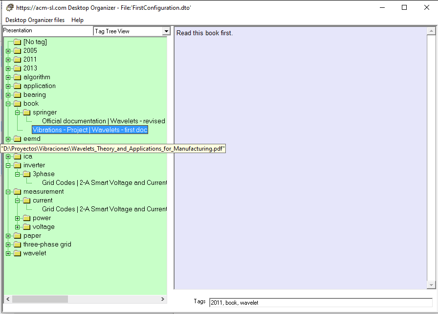

This view allows the exploration of the contents of the configuration file using the tags assigned to each Option. Note that the Groups do not have labels, and that each Option is presented with a text that includes the Group it is in, followed by its tittle, and at each tag associated with it.

Options without associated tags are presented in the [No tags] entry.
Another important aspect is the consideration of hierarchical tags. In the figure above, the selected Option ("Wavelets - first doc" in Group "Vibration - Project") is associated to a first level tag (book); but the Option immediately above it ("Wavelets - revised" in "Official documentation" Group) is associated to a second level tag (book:springer)